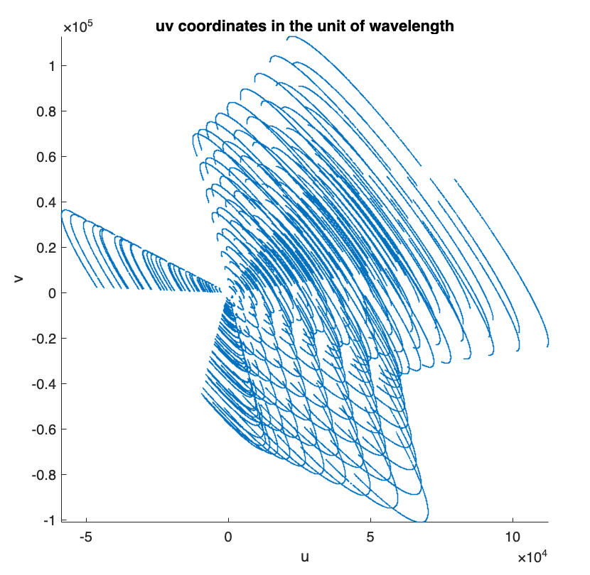
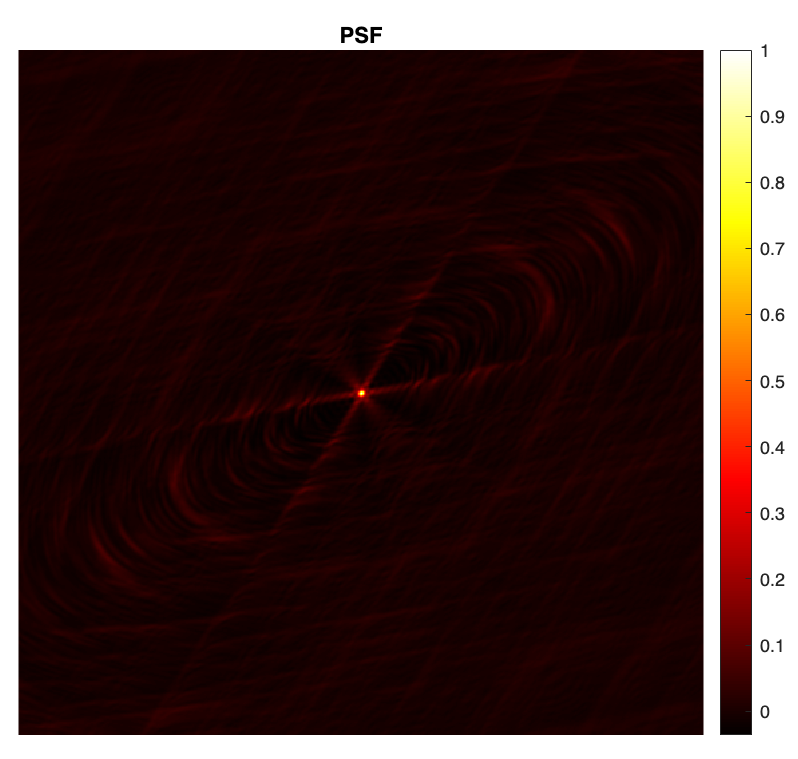
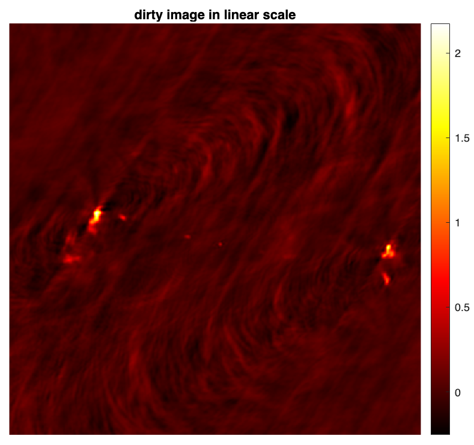

SII Measurement Operator Tutorial
This tutorial is focused on a MATLAB
implementation of the measurement operator for small-scale
monochromatic intensity imaging in synthesis imaging by interferometry (SII). It provides detailed
instructions on how to generate the measurement operator from a given Fourier sampling pattern and how
to utilise it to simulate measurements.
The repository encompasses a lighter version of the NUFFT library available
online and proposed by:
[1] Fessler, J. A., & Sutton, B. P., Nonuniform Fast Fourier Transforms Using Min-Max Interpolation, IEEE Trans. Image Process., 51(2), 560-574, 2003.
It also provides a w-correction functionality (via w-projection) associated with the following publication:
[2] Dabbech, A., Wolz, L., Pratley, L., McEwen, J. D., & Wiaux, Y.,
The w-effect in interferometric imaging: from a fast sparse measurement operator to superresolution, MNRAS, 471(4), 4300-4313, 2017.
The library is a core dependency of the Faceted-HyperSARA software for wideband SII, associated with the following publications:
[3] Thouvenin, P.-A., Abdulaziz, A. , Dabbech, A. , Repetti, A., & Wiaux, Y.,
Parallel faceted imaging in radio interferometry via proximal splitting (Faceted HyperSARA): I. Algorithm and simulations, MNRAS, 521(1), 1–19, 2023.
[4] Thouvenin, P.-A., Dabbech, A., Jiang, M., Thiran, J.-P., Jackson, A., & Wiaux, Y.,
Parallel faceted imaging in radio interferometry via proximal splitting (Faceted HyperSARA): II. Real data proof-of-concept and code
, MNRAS, 521(1), 20–34, 2023.
SII Inverse Problem
Assuming a narrow field of view and in absence of direction dependent effects, at a given time instant, each pair of antennas acquires a noisy complex measurement, termed visibility, corresponding to a Fourier component of the sought radio emission. The collection of the sensed Fourier modes accumulated over the total observation period forms the Fourier sampling pattern, describing an incomplete coverage of the 2D Fourier plane.
Under these considerations, the measurement operator model reduces to a Fourier sampling operator which reads [1]: \[\boldsymbol{\Phi} = \mathbf{G}\mathbf{F}\mathbf{Z},\] where \(\boldsymbol{\Phi} \in \mathbb{C}^{N \times M}\) is the measurement operator corresponding to the non-uniform Fourier transform (NUFFT), \(M\) is the number of measurements, and \(N\) is the image dimension (i.e. number of pixels). \(\mathbf{G} \in \mathbb{C}^{M \times P}\) is a sparse interpolation matrix whose rows are convolutional kernels centered at the associated Fourier modes (i.e. \(uv\) points), \(\mathbf{F} \in \mathbb{C}^{P \times P}\) is the 2D Discrete Fourier Transform, and \(\mathbf{Z} \in \mathbb{C}^{P \times N}\) is a zero-padding operator which also incorporates the correction for the convolution performed through the de-gridding matrix \(\mathbf{G}\).
Clone Repository
You can clone the repository to the current directory by running the command below in MATLAB:

!git clone https://github.com/basp-group/RI-measurement-operator.git cd ./RI-measurement-operator
Generate SII Measurement Operator
To start with, set up the following paths so that MATLAB can find the required functions and input files.
addpath data; addpath nufft; addpath lib/operators; addpath lib/utils; addpath lib/ddes_utils;
We will use a simulated Fourier sampling pattern generated with the VLA, provided in "tests/test.mat". It contains the \(uvw\) coordinates in meters and the observation frequency in Hz. Load the variables of interest.
myuvwdatafile = fullfile("tests","test.mat"); frequency = load(myuvwdatafile,'frequency').frequency; u_meter = load(myuvwdatafile,'u').u; v_meter = load(myuvwdatafile,'v').v; w_meter = load(myuvwdatafile,'w').w;
Convert the \(uvw\) coordinates in the unit of the observation wavelength as follows (this is needed for the computation of the pixel size in physical units).
speedOfLight = 299792458; % speed of light wavelength = speedOfLight/frequency; % observation wavelength % convert the \(uvw\) coordinates in the units of the wavelength u = u_meter(:) ./ wavelength; v = v_meter(:) ./ wavelength; w = w_meter(:) ./ wavelength;
The 2D Fourier sampling pattern is described by the \(uv\) coordinates.
% plot the 2D Fourier sampling pattern figure; scatter(u, v, 0.1) axis equal, axis square, axis tight xlabel('u') ylabel('v') title("uv coordinates in the unit of wavelength")

To generate the measurement operator, two crucial parameters need to be set:
- the ground-truth/target image dimension \(N\),
- the ratio between the spatial bandwidth of the ground-truth/target image and the bandwidth of the Fourier sampling, to which we refer to as the super-resolution factor \(\textrm{superresolution} \ge 1\). The bandwidth of the Fourier sampling is given by the maximum projected baseline \(\textrm{maxProjBaseline} = \textrm{max}(\sqrt{\boldsymbol{u}^2+\boldsymbol{v}^2})\).
Note that from the value of \(\textrm{superresolution}\), one can compute the resulting pixel size of the ground-truth/target image in \(\boldsymbol{\textrm{arcsec}}\): \[\textrm{imPixelSize} = \frac{180 \times 3600}{\pi} \times \frac{1} {2 \times\textrm{maxProjBaseline} \times {\textrm{superresolution} }}\] Consider a ground-truth/target image \(\boldsymbol{\bar{x}}\) of size \(N=512 \times 512\). For the sake of this demonstration, we consider \(\textrm{superresolution}=1.5\), which means that the spatial bandwidth of the Fourier sampling corresponds to 2/3 the spatial Fourier bandwidth of the ground-truth/target image.
imSize = [512, 512]; % image size: N = 512x512 resolution_param.superresolution = 1.5; % superresolution factor resolution_param.pixelSize = []; % pixel size in arcsec if known; keep empty to use superresolution factor instead
The measurement operator \(\boldsymbol{\Phi}\) and its adjoint \(\boldsymbol{\Phi}^\dagger\) can be generated as function handles by calling the function ops_raw_measop.m.
[measop, adjoint_measop, ~] = ops_raw_measop(u, v, w, imSize,resolution_param);
Note that, the user can input additional parameters to the function ops_raw_measop.m as shown below. Default values will be used otherwise.
% NUFFT parameters nufft_param.N = imSize; % image size nufft_param.J = [7, 7]; % NUFFT convolutional kernel size nufft_param.K = 2 * imSize; % Fourier space size, with zero-padding factor 2 in each dimension nufft_param.nshift = imSize / 2; % Fourier shift (matlab convention) nufft_param.ktype = 'minmax:kb'; % NUFFT convolutional kernel type % Compute data weights (e.g., uniform; Briggs) weighting_param.gen_weights = false; % Apply w-correction (not required for narrow fields of view) wproj_param.enable_wproj = false; [measop, adjoint_measop, ~] = ops_raw_measop(u, v, w, imSize, resolution_param, ... weighting_param, nufft_param, wproj_param);
Simulate SII measurements
To simulate SII measurements, we take a post-processed image of the radio galaxy 3c353 as the ground truth \(\boldsymbol{\bar{x}}\). The image is in .fits format provided in "tests/3c353_gdth.fits".
img_gdth = fitsread(fullfile("tests","3c353_gdth.fits")); % read the fits file figure imagesc(img_gdth) colorbar, axis image, colormap('hot') title("Ground truth image in linear scale")

figure imagesc(log10(img_gdth),[-4 -1]), axis image, colorbar, colormap('hot') title('Ground truth in log scale')

The clean visibilities are modelled as \(\boldsymbol{y}_{\textrm{clean}} = \boldsymbol{\Phi}\boldsymbol{\bar{x}}\).
y_clean = measop(img_gdth);
SII measurements modelled as \({\boldsymbol{y}} = {\boldsymbol{\Phi} {\boldsymbol{\bar{x}}} + \boldsymbol{n}}\) are subsequently obtained by adding a realisation of a white Gaussian noise \(\boldsymbol{n}\), with mean 0 and a standard deviation \(\tau\), to the clean visibilities \(\boldsymbol{y}_{\textrm{clean}} \). The value of \(\tau\) can be derived from a user-specfied input signal to noise ratio. Note that \(\tau\) can also be set to be commensurate with the dynamic range of the ground-truth image. We refer the reader to the script example_sim_ri_data.m for details.
iSNR = 40; % user-specified input SNR M = numel(y_clean); tau = 10^(-iSNR/20) * norm(y_clean) / sqrt(M); % calculate tau noise = (randn(M,1) + 1i * randn(M,1)) * tau./sqrt(2); % random Gaussian noise with std tau and mean 0 y = y_clean + noise; % noisy measurements
To image the simulated SII measurements, create the associated measurement file in .mat format, that is input to the SII algorithms for small-scale monochromatic intensity imaging provided in BASPLib as shown below.
nW = ones(size(y)) ./ tau; % the inverse of the noise std maxProjBaseline = sqrt(max(u.^2 + v.^2)); % bandwidth of the spatial Fourier sampling save("3c353_mysimdata.mat", 'y','u','v','w','frequency','nW','-v7.3') fprintf('\nMeasurement file saved.\n')
Imaging weighting schemes
During imaging, a common practice is to apply a whitening operation to the measurements via point-wise multiplication with the inverse of the noise standard deviation. This is known as natural weighting.
The natural weighting vector nW in our example is given by:
nW = ones(size(y)) ./ tau;
Often, this is done in combination with an additional imaging weighting scheme to compensate for the unbalance of the Fourier sampling such as uniform weighting or Briggs weighting and consequently enhance the effective resolution of the reconstruction.
The function ops_raw_measop.m enables computing these imaging weighting schemes (see the function util_gen_imaging_weights.m for details). The final weighting vector is the product of the two.
In this example, we consider Briggs weighting with robust parameter 0.
weighting_param.gen_weights = true; weighting_param.weight_type = 'briggs'; % can be chosen from 'briggs' or 'uniform' weighting_param.weight_robustness = 0.0; % associated with Briggs weighting [~, ~, nWimag] = ops_raw_measop(u, v, w, imSize, resolution_param, weighting_param);
During imaging, the final weighting vector is applied to the SII measurements and is also included in the associated imaging measurement operator.
y_weighted = y .* (nW .* nWimag); % weighted data measop_weighted = @(x) (nW .* nWimag).* measop(x); % weighted meas. op. for imaging adjoint_measop_weighted = @(y) adjoint_measop((nW .* nWimag) .*y); % the adjoint of the weighted meas. op. for imaging
PSF & Dirty image
The point spread function (PSF) is defined as \(\boldsymbol{h} = \kappa\textrm{Re}\{\boldsymbol{\Phi}^{\dagger} \boldsymbol{\Phi}\boldsymbol{\delta}\}\), with \(\boldsymbol{\delta}\) a Dirac delta image (with value 1 at its center and 0 otherwise), and \(\kappa\) a normalisation factor ensuring that its peak value is equal to 1.
dirac = sparse(floor(imSize(1)./2)+1, floor(imSize(2)./2)+1, 1, imSize(1), imSize(2)); psf_0 = real(adjoint_measop(measop(full(dirac)))); kappa = 1./max(psf_0, [], 'all'); % normalisation factor psf = kappa * psf_0; % normalised psf figure imagesc(psf) axis square, axis off colormap('hot') colorbar title("PSF")

The normalised back-projected data also known as the dirty image is defined as \(\boldsymbol{x}_d = \kappa \textrm{Re} \{\boldsymbol{\Phi}^{\dagger} \boldsymbol{y}\} \).
dirty = kappa * real(adjoint_measop_weighted(y_weighted)); % the dirty image figure imagesc(dirty) axis square, axis off colormap('hot') colorbar title("dirty image in linear scale")

%% save PSF & dirty image % fitswrite(dirty,'3c353_dirty.fits') % fitswrite(psf,'psf.fits')
SII measurement operator tutorial in MATLAB
You can download this tutorial in .mlx format and launch it directly in MATLAB
 .
.